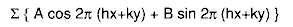
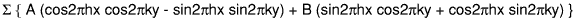
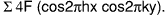
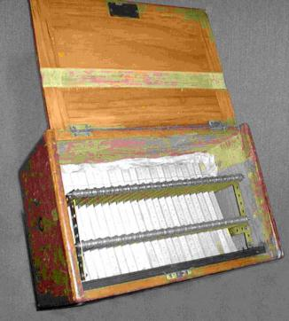
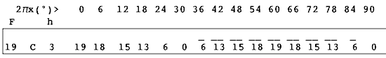
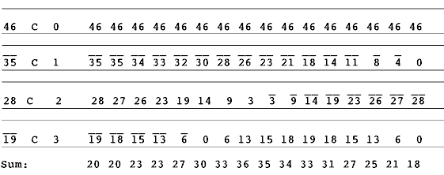

Today, when Fourier transforms on several thousand data items for large, three dimensional unit cells at a resolution of about 0.3 Å require less time than it takes to gulp down a cup of coffee, it is difficult to imagine the size of the task confronting early crystallographers, where this operation was almost unthinkable. After all, even a two dimensional summation of:

for 500 data items into 2000 points requires 106 summations, let alone any work required to calculate the trigonometric functions! The great contribution of Beevers and Lipson in 1936 was twofold: to simplify the calculations greatly by factorising the trigonometric expressions to reduce the two dimensional calculations to many fewer one dimensional ones, and to provide a convenient technique for carrying out the summations - the strips themselves. The factorisation technique is still at the heart of many computer programs. The expression given above expands to:

That may hardly seem an advantage! However, in the centrosymmetric plane group p2mm, for example, with equivalent reflections F(h,k) = F( -h,-k) = F( -h,k) = F( h,-k) and no phase shift among equivalent data, combination of these reflections causes all terms involving sines to disappear, leaving .
The data were sorted to minimise the number of changes in h. Thus a set of
summations for each ky need only be followed by a single summation for that
hx.
The boxes of strips themselves have virtually disappeared
although they were once almost universal in the crystallographic community.
Over 500 sets were sold between 1948 and 1970, and a photograph of
Arnold Beevers and Henry Lipson in bathing attire with the caption "Beevers
and Lipson stripped" was an instant hit in an informal precursor of
'Crystallography News'!
I am most grateful to Richard
Glazer of Oxford Cryosystems, who kindly photographed this handsome boxed
set which still survives in the Clarendon Laboratory at Oxford University in
1998.

You can see that the strips themselves (4000 of them in the final version!)
were handsomely boxed for convenient use.
The original version had strips representing Fcos 2pihx and Fsin 2pihx
corresponding to amplitudes from 1 to 99 and from h = 0 to 20. Later ones
doubled the resolution by printing the even values on one side of the strip
and the odd ones on the other.
The actual strip illustrated below is a cosine (C) strip, for F = 19 and h = 3, giving values of Fcos 2phx for 2px from 0 to 90°, i.e. x from 0 to 0.25. Suitable reversing of direction and sign enabled other parts of the range to be studied.

For a one dimensional sum, the appropriate strips were arranged one under the other and the columns summed: The following shows the start of an array of cosine strips, here for h = 0,1,2,and 3 and F = 46, -35, 28 and -19.

Some people used mechanical calculators for the sums, but most found it far
quicker and more accurate to use mental arithmetic, a skill more widely found
then than now.
In fact a BBC documentary of a few years ago showing
Rosalind Franklin with a box of strips laboriously cranking them into a
mechanical calculator was almost certainly apocryphal. She would not have
wasted time on that!
Bob Gould
University of Edinburgh
Editor's Note:
Bob also wrote '
Arnold Beevers at 90', printed
in 'Crystallography News' issue 65 June 1998 p 38,39 where further details
can be found. A photo of both Beevers and Lipson, each carrying a box of
strips and dressed in conventional attire was published in 'Crystallography
News' issue 37 June 1991 p 16 accompanied a report of a session on
'Historical Crystallography' which was held on March 28th
1991 during the 10th annual Spring meeting of the BCA held in Sheffield in
1991.
 Click here to return to BCA homepage
Click here to return to BCA homepage